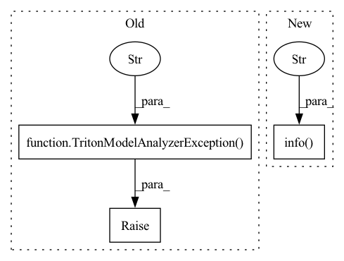

Pattern ID :12888

Before Change
f"increased to {self._config["measurement-interval"]} ms."
)
else:
raise TritonModelAnalyzerException(
f"Running perf_analyzer with {e.cmd} failed with"
f" exit status {e.returncode} : {e.output}")
raise TritonModelAnalyzerException(
f"Ran perf_analyzer {MAX_INTERVAL_CHANGES} times, "
"but no valid requests recorded in max time interval"
After Change
// perf_analyzer using too much CPU?
cpu_util = process_util.cpu_percent(interval_sleep_time)
if cpu_util > self._max_cpu_util:
logging.info(f"perf_analyzer used significant amount of CPU resources ({cpu_util}%), killing perf_analyzer...")
self._output = process.stdout.read()
process.kill()
// Failure
In pattern: SUPERPATTERN
Frequency: 5
Non-data size: 3
Instances
Fragment ID: 43567864
Project Name: triton-inference-server/model_analyzer
Commit Name: ee6f71044943c0f52500e6993d5f6f5921216bb8
Time: 2021-03-10
Author: itabrizian@nvidia.com
File Name: model_analyzer/perf_analyzer/perf_analyzer.py
M Class Name: PerfAnalyzer
N Class Name: PerfAnalyzer
M Method Name: run(2)
N Method Name: run(2)
M Parent Class:
N Parent Class:
M File Name: model_analyzer/perf_analyzer/perf_analyzer.py
N File Name: model_analyzer/perf_analyzer/perf_analyzer.py
M Start Line: 78
M End Line: 104
N Start Line: 87
N End Line: 151
'>
Before Change
self._client.load_model(model_name)
logger.info(f"Model {model_name} loaded.")
except Exception as e:
raise TritonModelAnalyzerException(
f"Unable to load the model : {e}")
def unload_model(self, model_name):
Request the inference server to unload
After Change
self._client.load_model(model_name)
logger.info(f"Model {model_name} loaded.")
except Exception as e:
logger.info(f"Model {model_name} load failed: {e}")
return -1
def unload_model(self, model_name):
'>
Fragment ID: 43567859
Project Name: triton-inference-server/model_analyzer
Commit Name: ee6f71044943c0f52500e6993d5f6f5921216bb8
Time: 2021-03-10
Author: itabrizian@nvidia.com
File Name: model_analyzer/triton/client/client.py
M Class Name: TritonClient
N Class Name: TritonClient
M Method Name: load_model(2)
N Method Name: load_model(2)
M Parent Class:
N Parent Class:
M File Name: model_analyzer/triton/client/client.py
N File Name: model_analyzer/triton/client/client.py
M Start Line: 82
M End Line: 83
N Start Line: 82
N End Line: 83
'>
Before Change
self._client.unload_model(model_name)
logger.info(f"Model {model_name} unloaded.")
except Exception as e:
raise TritonModelAnalyzerException(
f"Unable to unload the model : {e}")
def wait_for_model_ready(self, model_name, num_retries):
Returns when model is ready.
After Change
self._client.unload_model(model_name)
logger.info(f"Model {model_name} unloaded.")
except Exception as e:
logger.info(f"Model {model_name} unload failed: {e}")
return -1
def wait_for_model_ready(self, model_name, num_retries):
'>
Fragment ID: 43567861
Project Name: triton-inference-server/model_analyzer
Commit Name: ee6f71044943c0f52500e6993d5f6f5921216bb8
Time: 2021-03-10
Author: itabrizian@nvidia.com
File Name: model_analyzer/triton/client/client.py
M Class Name: TritonClient
N Class Name: TritonClient
M Method Name: unload_model(2)
N Method Name: unload_model(2)
M Parent Class:
N Parent Class:
M File Name: model_analyzer/triton/client/client.py
N File Name: model_analyzer/triton/client/client.py
M Start Line: 106
M End Line: 107
N Start Line: 106
N End Line: 107
'>
Before Change
if self._output:
return self._output
raise TritonModelAnalyzerException(
"Attempted to get perf_analyzer output"
"without calling run first.")
def get_records(self):
Returns
After Change
if self._output:
return self._output
logger.info("perf_analyzer did not produce any output.")
def get_records(self):
Returns
'>
Fragment ID: 43567862
Project Name: triton-inference-server/model_analyzer
Commit Name: 228af769ba71341145820f72275e7db9375d97fe
Time: 2022-01-07
Author: matthew.r.kotila@gmail.com
File Name: model_analyzer/perf_analyzer/perf_analyzer.py
M Class Name: PerfAnalyzer
N Class Name: PerfAnalyzer
M Method Name: output(1)
N Method Name: output(1)
M Parent Class:
N Parent Class:
M File Name: model_analyzer/perf_analyzer/perf_analyzer.py
N File Name: model_analyzer/perf_analyzer/perf_analyzer.py
M Start Line: 272
M End Line: 274
N Start Line: 272
N End Line: 272
'>
Before Change
retries -= 1
if retries == 0:
raise TritonModelAnalyzerException(e)
raise TritonModelAnalyzerException(
"Could not determine model readiness. "
"Number of retries exceeded.")
def get_model_config(self, model_name, num_retries):
Model name to get the config for.
After Change
time.sleep(0.05)
retries -= 1
logger.info(
f"Model readiness failed for model {model_name}. Error {error}")
return -1
def get_model_config(self, model_name, num_retries):
'>
Fragment ID: 43567863
Project Name: triton-inference-server/model_analyzer
Commit Name: ee6f71044943c0f52500e6993d5f6f5921216bb8
Time: 2021-03-10
Author: itabrizian@nvidia.com
File Name: model_analyzer/triton/client/client.py
M Class Name: TritonClient
N Class Name: TritonClient
M Method Name: wait_for_model_ready(3)
N Method Name: wait_for_model_ready(3)
M Parent Class:
N Parent Class:
M File Name: model_analyzer/triton/client/client.py
N File Name: model_analyzer/triton/client/client.py
M Start Line: 140
M End Line: 144
N Start Line: 130
N End Line: 145